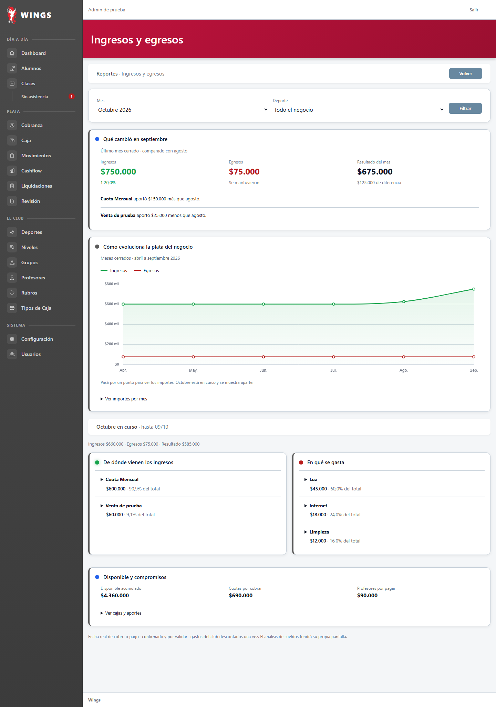
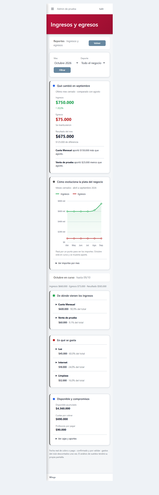
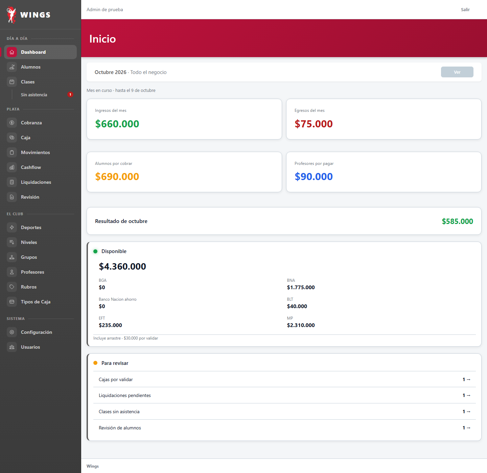
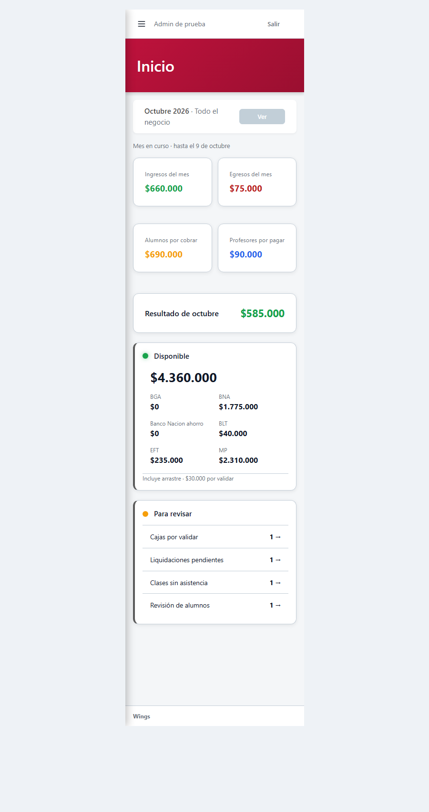

Ingresos y egresos · Nueva propuesta
Datos ficticios: 24 alumnos, abril–octubre de 2026. Capturas de respuestas auténticas de Laravel; celular dentro de un marco real de 375 píxeles. Inicio fue aprobado y aplicado. Esta nueva pantalla financiera está por elegir.
Ingresos y egresos · Pendiente de elección
Qué cambió, qué rubros lo explican, cómo evolucionó el negocio y en qué se gasta. El gráfico permite consultar importes por punto; cada rubro despliega sus movimientos. Los filtros todavía muestran solo el aspecto. Alumnos y Sueldos tendrán pantallas separadas.




Inicio · Aprobado y aplicado
Carlos: «Ok, aprobado». Cuatro avisos conectados y verificados. Ver y enlaces de cifras deshabilitados hasta implementar los nuevos reportes.




Reportes original · Rechazado por Carlos
Antecedente conservado, sin aprobación ni aplicación: «Ese reporte no sirve».


Control del método: login a 375. La pantalla entra completa. Ensayo del motor e historial. Sin despliegue.